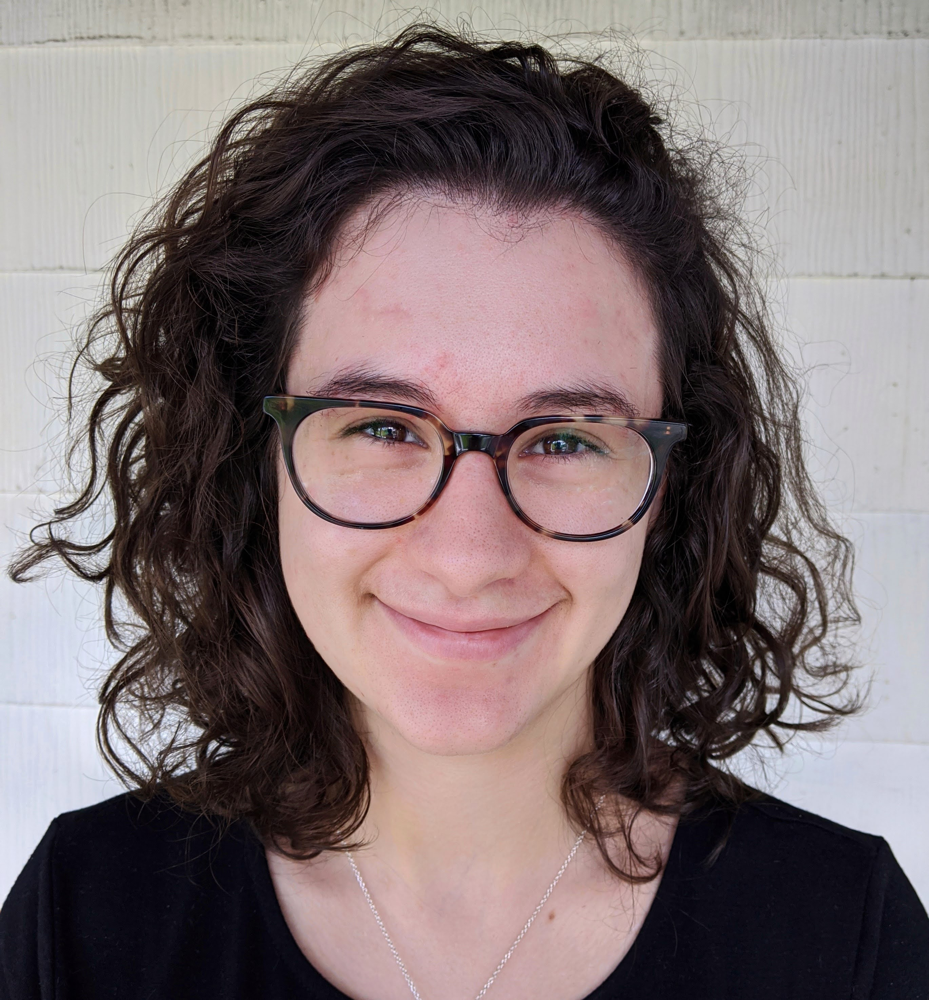

she/her
Welcome! I'm currently a Visiting Assistant Professor of Computer Science at Williams College (go 🐮!). I received my Ph.D. in Computer Science from Cornell University in 2020, where I was advised by Haym Hirsh. Before that, I received my M.S. in Computer Science from Cornell and my B.A. in Mathematics & Computer Science from Swarthmore College.
News
Research
I'm interested in bridging the gap between powerful computational methods and the human-centered world. Specifically, my work considers how methods that are newly practical,
such as program synthesis and crowdsourcing, can be adapted to solve complex human problems in meaningful ways. As part of this work, I've considered how we can diagnose math errors automatically,
adapt synthesis engines for CS1 students, and the design behind how we write with crowds. This work has been made possible by my great collaborators!
Publications
- How we write with crowds, CSCW 2020, with Brian McInnis
- Towards Answering "Am I On the Right Track?" Automatically using Program Synthesis, SPLASH-E 2019, with Yiting Wang, William E. Byrd, François Guimbretière & Erik Andersen
- Automatic Diagnosis of Students' Misconceptions in K-8 Mathematics, CHI 2018,
with Ji Yong Cho, Monica Ong, Sumit Gulwani, Zoran Popović & Erik Andersen
Selected Invited Talks
- Applying Newly Practical Techniques to Human-Centered Problems at Williams College, Department of Computer Science, April 2020 [Cancelled due to COVID-19]
- Automatic Diagnosis of Student Misconceptions in K-8 Mathematics at Harvard University, Department of Computer Science, June 2019
- Building Better Automated Feedback Solutions at Brown University, Department of Computer Science, November 2016
- PL-Based Educational Technology at Lake Placid, IFIP WG2.8, July 2016
Outreach & Service
- I love to talk to aspiring scientists as part of Skype a Scientist!
- While at Cornell, I did STEM outreach as part of the Cornell Math Department, GRASSHOPR, the Expanding your Horizons conference, and the American Association of University Women for their TECH Savvy workshop
- I review for venues such as human-centered SPLASH workshops, CSCW, and CHI. I've received numerous reviewing awards for my work.
Williams students: please use Slack or email me at molly@cs.williams.edu
For all other communication, please email me at contact@feldmanmolly.com or find me on Twitter @feldmanmolly.
I am originally from the beautiful, tiny state of Rhode Island.